Co-op Mission Guide: Part and Parcel
Moebius Research Station
Sections on this Page
Mission Summary
Moebius Corps researchers have been experimenting on hybrid as they attempt to create even more destructive horrors. Help General Davis put an end to this by using Moebius Corps' own unfinished mech, the Balius, to kill the hybrid.

Objectives
Primary Objective
- Kill Moebius Hybrid (3)
- Gather Balius Parts to delay Hybrid (70 x 3)
- Stop the Moebius Hybrid Project
Secondary Objective
- Destroy the Trains (2)
Identifying the Enemy Race
It is possible to uniquely identify the enemy race on this map. First, check for creep (Alt +T) to check if the enemy is Zerg. If not, use a worker to attack one of the boxes near your Primary Structure. If the enemy race is Protoss, an enemy composition indicator will appear. If the enemy is Terran, no composition indicator will appear. A video is below:
Enemy Base Analysis
Change all base analysis pictures to race:
The expansion on Part and Parcel is guarded by enemy forces, it is usually optimal to first capture the expansion. The expansion is shown below.
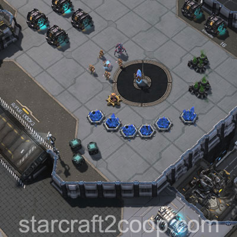
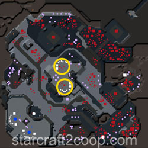
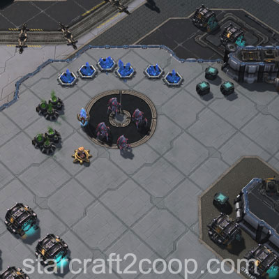
The next area that is usually pushed is the bottom left. This is because there are very minimal defenses, and has enough parts that, combined with the expansion, can complete the first main objective.
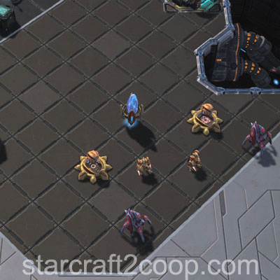
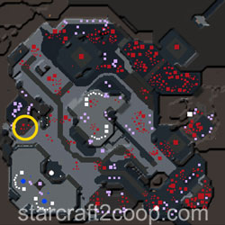
At this point, the first hybrid would have spawned. The path between your main and the hybrid is guarded by tiny patches of enemies (which should have already been cleared on the way to your expansion) and an enemy camp. The enemy camp is shown below.
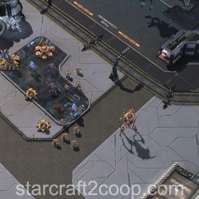
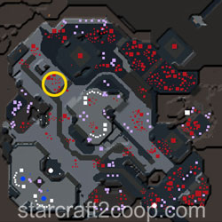
The next camp that would be attacked is the one East of your expansion. This usually lines up with the attack wave that spawns. The camp is shown below.
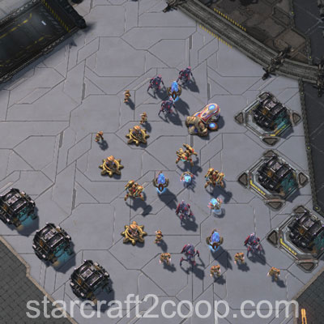
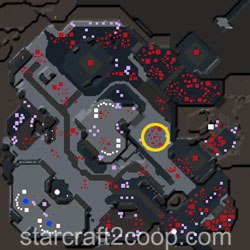
Once this base is cleared, it is usually recommended to clean up the area around this. Watch out for the Hybrid Dominator in this area.
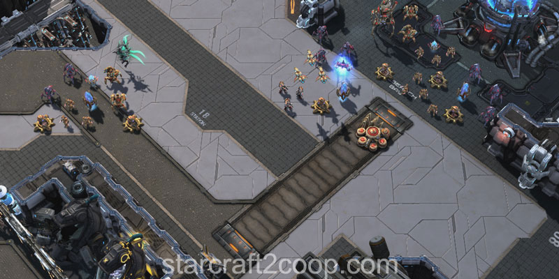
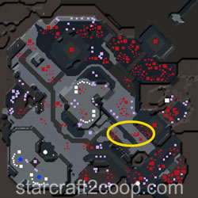
With the cleanup done, you can move south and take the camp at the bottom right of the map, right outside the main.
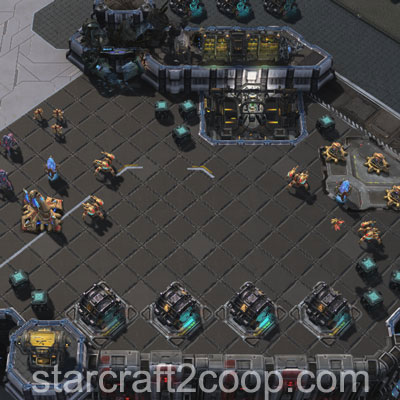
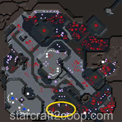
By this point, you should have a sufficiently large army to be able to push anywhere you like and gather the remaining parts to finish up the mission. Near the above base, there is an enemy base which has a lot of parts.
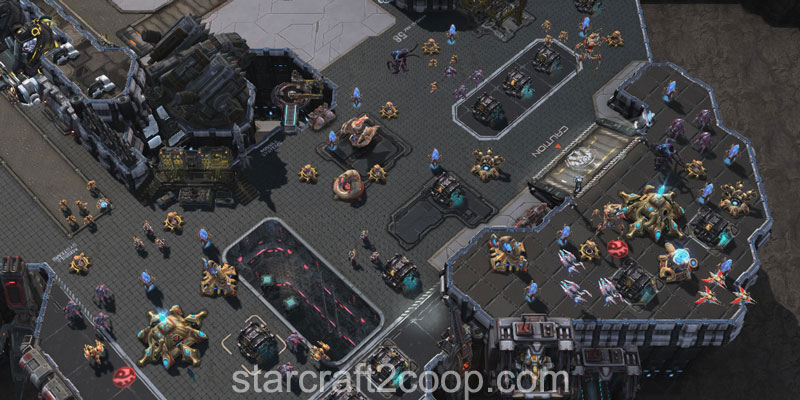
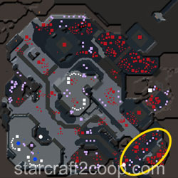
Just north of this base, there is an alcove with some more parts to collect.
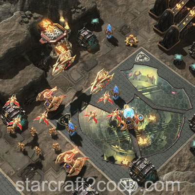
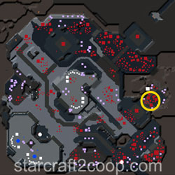
At the top left of the map there is a large enemy camp with several parts available for pick up as well.
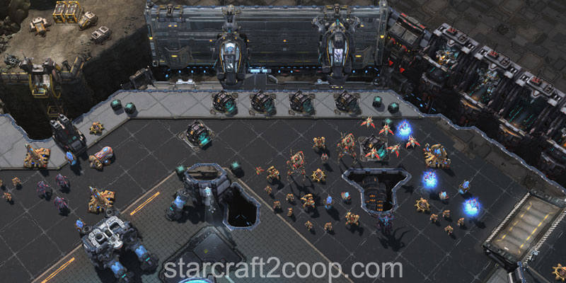
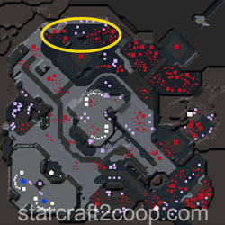
The final place you will need to push is the North enemy base. This is the area with most defenses. There is a ramp off to each side as well, if you prefer to attack from the side.
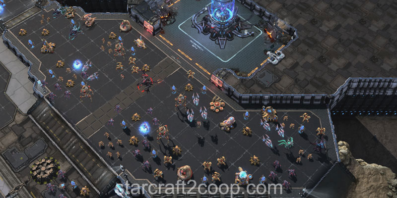
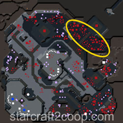
Hybrid Abilities
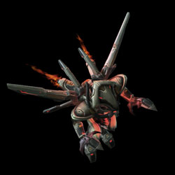
The Hybrid that spawns after the containment cell is broken has its own abilities. These are listed below:
| Ability | Description | Cooldown | ||||||||||||
|---|---|---|---|---|---|---|---|---|---|---|---|---|---|---|
| Attack Wave Spawner | Spawns an attack wave with the following Tech and Strength levels depending on which Hybrid in the mission it is. For more information, please check the Enemy Compositions page.
|
45 seconds | ||||||||||||
| Fire Chains | Creates a number of dots on the ground that eventually explode after 4.5 seconds, dealing 50 damage per hit. They can be either in a circular pattern (with radius 10) or in a conical pattern (with length 15). | 30 seconds | ||||||||||||
| Illusionist | Creates 2, then 3, then 4 mirror images of the Hybrid. The total HP and shields of all spawned Hybrids is 30% of the main Hybrid's max HP and shields, equally spread across all of them. | 20 seconds | ||||||||||||
| Lock On | Selects a target and places a lock-on marker on it for 5 seconds before holding its position, and then deals 200 damage vs. ground and 150 damage vs. air after 2 seconds. | 12 seconds | ||||||||||||
| Puddle Lines | Creates a grid-like pattern on the ground that deals 1 damage per second to all units on top of them. The gridlines last 10 seconds. | 45 seconds | ||||||||||||
| Stasis | Creates an area of radius 6 on the ground that lasts 5 seconds. Any units located in that area will be put into stasis for 8 seconds. Units in stasis cannot be attacked and do not take damage. However, they are unable to move, attack, or use abilities. | 20 seconds |
The first Hybrid will only have one ability. The second two. And the third, three. Abilities are shared between the Hybrids. That is, a Hybrid will have all of the previous Hybrids' abitiles and an additional new one. A Hybrid cannot have both, Fire Chains and Puddle Lines at the same time.
Completing the Bonus Objective
The bonus objective requires you to destroy two Moebius trains before they cross the map. The the first train will spawn from the left, and the second from the right. They both spawn on the same rail. The path these trains take is shown below:
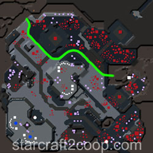
Timings
Note: Information on Tech and Strength levels can be found on the Enemy Compositions page.
The timings for the attack waves, Strength and Tech Levels and targets on this map are shown below.
The Attack Wave Timings for this mission are:
| Wave | Time | Tech Level | Strength Level | Target |
|---|---|---|---|---|
| 1 | 3:45 | 1 | 1 | Main Base |
| 2 | 6:30 | 2 | 2 | Main Base |
| 3 | 10:00 | 3 | 3 | Expansion |
| 4 | 14:06 | 4 | 4 | Main Base |
| 5 | 17:12 | 5 | 5 | Expansion |
| 6 | 20:00 | 6 | 6 | Main Base |
| 7 | 24:00 | 7 | 7 | Army |
| 8 | 27:00 | 5 | 5 | Main Base |
| 9 | 30:00 | 6 | 6 | Main Base |
The spawn timings for the Bonus trains is below:
| Train | Time | Spawn Location |
|---|---|---|
| 1 | 8:00 | Left |
| 2 | 15:00 | Right |
Spawn Points
There are four spawn points for the attack waves on this map. The left spawn point for normal attack waves is shown below:
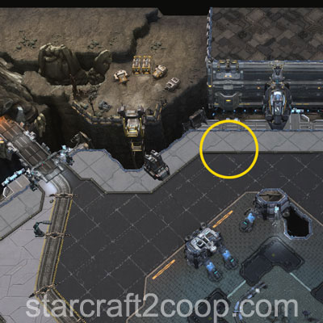
The left spawn point for attack waves targeting the expansion is shown below:
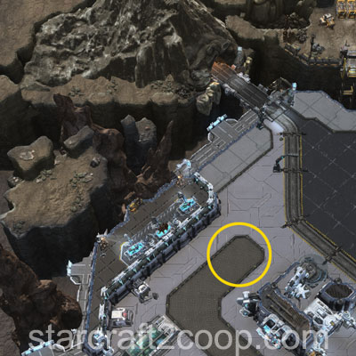
The right spawn point for normal attack waves is shown below:
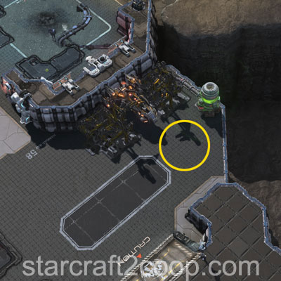
The right spawn point for attack waves targeting the expansion is shown below:
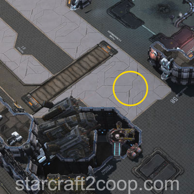
Mission Tips
- Even once the Balius is complete, you can use that time to collect more parts. This will further add seconds to your clock, and the parts will count for the next phase of the mission, sometimes, allowing you to start the next Hybrid phase immediately.
- There are more parts present on the map than you need to complete the mission.
- Gen. Davis will not attack the bonus objective for you, but will attack other enemy units.
- If the Balius gets too damaged while pushing to the Hybrid, the Balius will enter flight mode, break the Hybrid containment cell, then fly back.
Commander-specific Tips
- Han & Horner: Strike Fighter Platforms can be used to break and collect parts.
- Tychus: Crooked Sam can use his demolition charge on multiple train carriages at the same time, making him extremely effective at dealing with the bonus objective.
- Stukov: Once you have creep spread, move your Infested Colonist Compound to your expansion to minimize travel time of your infested.
- Zagara: Build your macro hatcheries at your expansion for quick reinforcements.
- Zeratul: Zeratul can identify the enemy race at the start of the game. As usual, if creep is present, the enemy race is Zerg. If the enemy is Terran, the four boxes that form a diamond shape will be centered in the expansion area on the minimap. If the diamond is off-center, the enemy race is Protoss. A video is below: